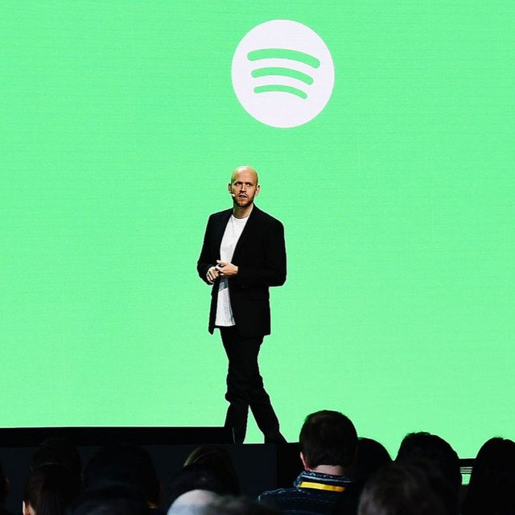

The Eclectic Polymath Podcast · Archive
#095 Dave Free: The Systems Architect Behind Kendrick Lamar’s Visual World

About this episode
Dave Free is not just a behind-the-scenes creative partner. He is one of the key architects of Kendrick Lamar’s modern cultural presence, helping turn music releases, visuals, live performances, and brand systems into tightly controlled cultural events.
This episode looks at Free’s evolution from childhood friend and computer technician to Top Dawg Entertainment executive, music video director, and co-founder of pgLang. His story is about the power of systems thinking in creativity — the ability to connect visuals, technology, scarcity, narrative, artist development, and brand architecture into something larger than a traditional record rollout.
Key points
- Dave Free is not just a behind-the-scenes creative partner.
- He is one of the key architects of Kendrick Lamar’s modern cultural presence, helping turn music releases, visuals, live performances, and brand systems into tightly controlled cultural events.
- This episode looks at Free’s evolution from childhood friend and computer technician to Top Dawg Entertainment executive, music video director, and co-founder of pgLang.
- We get into his partnership with Kendrick, the rise of pgLang, his work with Baby Keem, luxury brand campaigns, music video direction, and the production design behind moments like the Super Bowl LIX Halftime Show.
More like this
 #096 Larry Jackson: Apple Music, gamma, and the Artist-Entrepreneur EraJuly 14, 202648:49
#096 Larry Jackson: Apple Music, gamma, and the Artist-Entrepreneur EraJuly 14, 202648:49 #087 The Smiths: Loneliness, Legacy, and the Collapse of a BandJuly 6, 202658:07
#087 The Smiths: Loneliness, Legacy, and the Collapse of a BandJuly 6, 202658:07
#069 Spotify: Streaming, Piracy, and the Reinvention of MusicJune 29, 202652:54 #073 Nipsey Hussle: Ownership, Resistance, and the Marathon BlueprintJune 29, 202653:05
#073 Nipsey Hussle: Ownership, Resistance, and the Marathon BlueprintJune 29, 202653:05